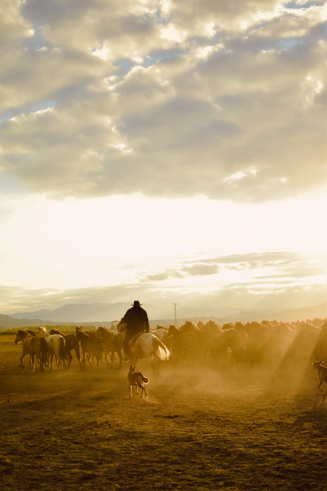

Fill the role of a real cowboy! This is an exciting experience as you are introduced to
the fast-paced life of a cowboy. Help rope a calf, corner and move a cow herd, chase down escaped livestock,
and keep the ranch a safe place to live and work. You will work hard and play hard while living it up as a
cowboy. From sunup to sundown, you'll be in full costume and participating in all aspects of the woring
ranch.
Ranch Hand
Get some real experience being a ranch hand. True to the title, the ranch hand is a
very important element of a dude ranch. He/She is involved in many aspects of the workings of a ranch.
You'll participate in the calving and doctoring of livestock, daily feeding of cattle, building, repairing,
and maintaining ranch facilities, baling hay, and whatever other duties assigned by the ranch supervisor.
Cook
Love cooking? The cook experience allows you to expand your horizons and learn how to cook
for an entire ranch of cowboys, ranch hands, wranglers, and other ranch employees. Learn ways to cook
economical yet delicious meals for large groups of people. Your are given almost free reign as to what you
would like to serve the ranch staff and guests. No meal is off limits. If you don't know where to start, our
experienced cooks are there to help in any way they can. Learn new recipes that you can serve your family
for generations to come.

Wrangler
A wrangler is someone who is involved in the process of taming, controlling, and
handling various animals. In this case, the wrangler experience involves horses found on the ranch. Many are
not tamed and you will work with a professional wrangler in taming the horse of your choosing. Learn the
process and feel that satisfaction as the horse begins to warm up to you. You also get to name your horse,
and once fully tamed and trained, your horse will start working on the ranch giving horseback rides to
people who request them. Otherwise, your horse will have several acres of land to run free and graze upon.